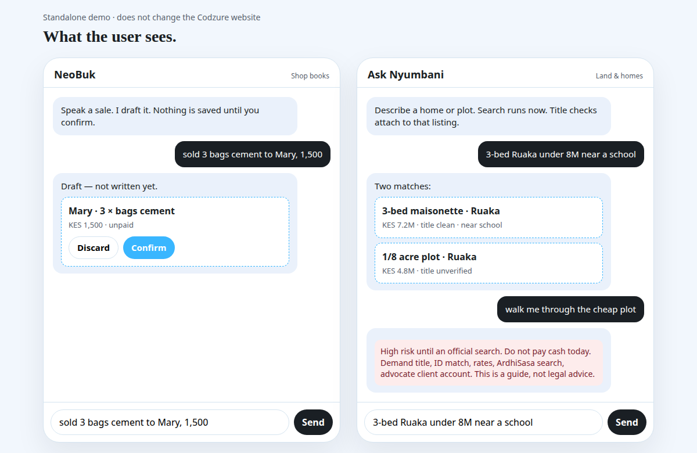

Standalone agent demo. Does not change https://codzure-solutions.vercel.app/
User screen — NeoBuk and Ask Nyumbani
The agent finishes a job, then waits. Writes are drafts until Confirm. Reads (search, who owes me) run immediately. Title help is a guide, not a legal verdict.

- NeoBuk: “sold 3 bags cement to Mary, 1,500” → draft → Confirm.
- Ask Nyumbani: “3-bed Ruaka under 8M near a school” → real matches, then a listing-bound title warning.
- One loop, two toolkits. Empty result ≠ invented data.